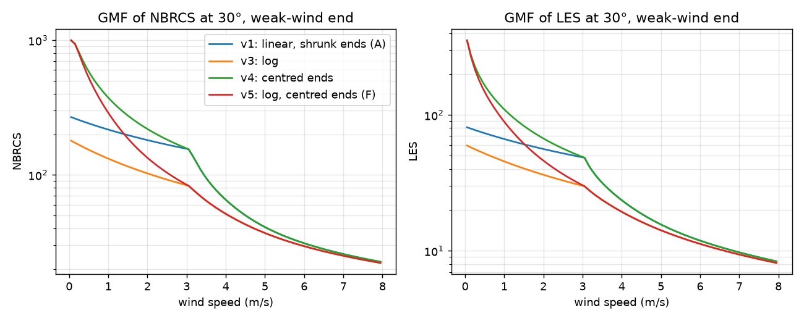
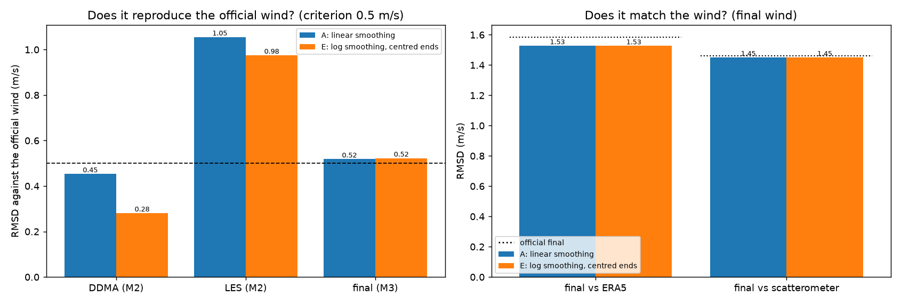

E: ponta de vento fraco da GMF¶
O modelo E é o modelo A mudando uma única coisa: a média móvel que suaviza a GMF passa a ser feita em escala log, com a janela centrada nas pontas.
| Modelo | GMF | Versão do vento |
|---|---|---|
| A | média linear, janela cortada nas pontas (gmf/v1) |
gmf-v1_mv-v1_ss-v1_db-v1 |
| E | média em log, janela centrada nas pontas (gmf/v5) |
gmf-v5_mv-v4_ss-v4_db-v10 |
Resumo
- A ponta de vento fraco da GMF estava mesmo distorcida, e a correção funciona: o vento DDMA passa a reproduzir o oficial bem melhor (0,28 contra 0,45 m/s), o LES também melhora (0,98 contra 1,05 m/s) e os ventos zerados somem.
- O vento final não muda: as etapas seguintes absorvem a diferença.
- A GMF do modelo E é a mais fiel e não piora nada; é a candidata a GMF padrão.
De onde veio a ideia¶
Na avaliação do modelo A, cerca de 0,4% das amostras de um dia saíam com vento zero quando o vento oficial ficava abaixo de 2 m/s, e o vento DDMA ficava acima do oficial nessa faixa. O oficial não faz isso.
A causa está na suavização da GMF. A GMF passa por uma média móvel de ±3 m/s ao longo do vento, como manda o ATBD. No vento fraco, entre 0 e 3 m/s, a curva da GMF despenca (o NBRCS cai de ~500 para ~60 a 30°), e essa média a deforma:
- abaixo de ~1 m/s a tabela fica baixa demais, e os sinais mais altos são extrapolados até virar vento zero;
- entre 1,5 e 3 m/s ela fica alta demais, o que faz o vento DDMA sair ~0,7 m/s acima do oficial nessa faixa.
A hipótese¶
Uma suavização que respeite o formato da curva no vento fraco deve:
- acabar com os ventos zerados e aproximar os ventos DDMA e LES dos oficiais (o M2);
- talvez melhorar o vento final no vento fraco.
O que foi testado¶
Duas opções combinadas (história 06, decisão D7):
- Média em escala log (
log1pdo sinal): na ponta de vento fraco a curva é quase reta em log, e a média não a entorta. O ATBD não diz se a média é tirada sobre a tabela ou sobre o log dela, então essa é uma leitura possível do ATBD. - Janela centrada nas pontas do eixo: perto de 0 m/s a janela encolhe dos dois lados, e não só de um. Só o log não basta: com a janela de um lado só, a média de logaritmos puxa a ponta ainda mais para baixo.
O resto da cadeia (MV 80/20, estado do mar e debias) é reajustado sobre a GMF nova, com 2021, como nos outros modelos. As duas opções separadas também foram ajustadas (gmf/v3, só o log, e gmf/v4, só a janela centrada), para a figura abaixo.
Resultados¶

Na figura, em escala log: a GMF do modelo A (azul) é quase plana abaixo de 3 m/s. Só o log (laranja) a deixa mais baixa ainda; só a janela centrada (verde) sobe a ponta, mas mantém a curva alta entre 1,5 e 3 m/s. As duas juntas (vermelho, modelo E) seguem o que o casamento de distribuições sem suavização dá (cerca de 514 a 0,5 m/s, 250 a 1 m/s, 104 a 2 m/s e 60 a 3 m/s). Acima de 5 m/s as curvas praticamente coincidem.

| Comparação | A | E |
|---|---|---|
| Vento DDMA × oficial (M2), RMSD | 0,453 | 0,281 |
| Vento DDMA × oficial, viés | +0,31 | +0,06 |
| Vento LES × oficial (M2), RMSD | 1,055 | 0,975 |
| Ventos zerados no DDMA e no LES | ~0,4% | nenhum |
| MV × ERA5, RMSD | 1,879 | 1,813 |
| Final × final oficial (M3), RMSD | 0,518 | 0,522 |
| Final × escaterômetro, RMSD | 1,450 | 1,450 |
Por faixa de vento do escaterômetro, A e E ficam iguais até 20 m/s.
Comparação com as abordagens anteriores¶
A coluna da rede é a média das cinco sementes.
| Medida | Oficial | A | B | C | D | Rede | E |
|---|---|---|---|---|---|---|---|
| Vento DDMA × oficial, RMSD (M2) | — | 0,45 | 0,47 | 0,45 | 0,45 | 0,45 | 0,28 |
| Vento LES × oficial, RMSD (M2) | — | 1,05 | 1,08 | 1,05 | 1,05 | 1,05 | 0,98 |
| Combinação (MV) × ERA5, RMSD | — | 1,88 | 1,87 | 1,88 | 1,89 | 1,56 | 1,81 |
| Final × final oficial, RMSD (M3) | — | 0,518 | 0,517 | 0,546 | 0,521 | 0,804 | 0,522 |
| Final × ERA5, RMSD | 1,585 | 1,527 | 1,528 | 1,537 | 1,526 | 1,591 | 1,526 |
| Final × escaterômetro, RMSD | 1,463 | 1,450 | 1,451 | 1,463 | 1,450 | 1,509 | 1,450 |
| Final × escaterômetro, viés | +0,08 | −0,19 | −0,19 | −0,21 | −0,19 | −0,22 | −0,19 |
| Média do RMSD nas faixas de 2 m/s, de 0 a 24 m/s (escaterômetro) | 2,36 | 2,36 | 2,35 | 2,62 | 2,35 | 3,05 | 2,35 |
| Viés com vento de 15 m/s ou mais (escaterômetro) | −2,09 | −2,04 | −2,04 | −2,63 | −2,04 | −2,91 | −2,04 |
| Viés com vento de 20 m/s ou mais (escaterômetro) | −2,83 | −2,99 | −2,91 | −4,86 | −2,93 | −5,44 | −2,94 |
O E tem as tabelas mais fiéis ao oficial (as duas linhas do M2) e empata com os melhores no vento final.
O que aprendemos¶
- A ponta da GMF estava mesmo errada, e a correção funciona. O vento DDMA passa a reproduzir o oficial bem melhor (o RMSD cai quase 40% e o viés vai a quase zero), os ventos zerados somem, e o LES também melhora um pouco. O LES continua acima do critério de 0,5 m/s por causa dos valores de 68 a 70 m/s do oficial, que não têm relação com a ponta.
- O vento final não muda. As etapas seguintes, reajustadas sobre a GMF nova, absorvem a diferença: o debias, no fim, casa a distribuição do vento com a do ERA5 e compensa um erro sistemático da ponta. É o mesmo efeito visto no modelo B e no D.
- Não é um caminho para o vento forte, já que a mudança age abaixo de ~5 m/s.
Situação¶
Candidata a GMF padrão das próximas rodadas: é a mais fiel ao oficial e não piora nada. A adoção ainda não foi decidida.